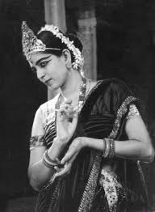
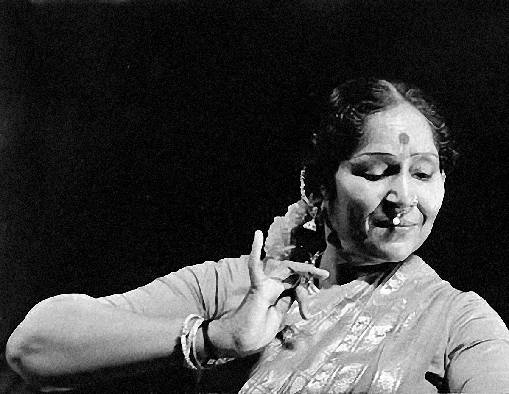

Masters & Pioneers
Guardians of Tradition
The history of Bharatanatyam is written through the lives and contributions of extraordinary artists and teachers who preserved, evolved, and elevated this ancient art form.
Legends in View
Portraits and performance images of the teachers and artists who shaped Bharatanatyam.

A founder of Kalakshetra who championed Bharatanatyam worldwide.

Renowned for lyrical abhinaya and preservation of traditional repertoire.

Artists who continue to innovate while preserving classical roots.
Early Masters & Temple Traditions
The earliest practitioners of Bharatanatyam were the devadasis, temple dancers who dedicated their lives to the service of deities through dance. These women preserved ancient techniques and compositions that form the foundation of the art form.
While individual names from this period are scarce due to the oral tradition of transmission, the lineages they established continue to influence Bharatanatyam today. Their dedication to perfection and spiritual devotion set the standard for generations of dancers.
The Revival Period
The early 20th century marked a crucial period of revival and reform for Bharatanatyam. Visionary artists worked to preserve the art form while adapting it for modern audiences.
- Rukmini Devi Arundale: Founded Kalakshetra and brought Bharatanatyam to international audiences
- E. Krishna Iyer: Pioneered the "Bharatanatyam" name and modern teaching methods
- T. Balasaraswati: Preserved traditional compositions and elevated the art form's status
- K. Subrahmanyam: Innovator who experimented with thematic presentations
Key Contributions
- Established institutions
- Documented techniques
- International recognition
- Educational reforms
- Preservation efforts
Modern Pioneers
The mid-20th century saw Bharatanatyam establish itself as a concert art form. Dancers and gurus developed new approaches while maintaining traditional excellence.
Artists like Alarmel Valli, Sudharani Raghupathy, and V.P. Dhananjayan continued the legacy of innovation, bringing fresh interpretations while honoring the form's classical roots.
Contemporary Voices
Today's Bharatanatyam artists continue to push boundaries while preserving tradition. They engage with contemporary themes, collaborate across disciplines, and bring the art form to new audiences worldwide.
From innovative choreographers to dedicated teachers, these artists ensure that Bharatanatyam remains a living, evolving tradition that speaks to modern sensibilities while honoring its ancient wisdom.